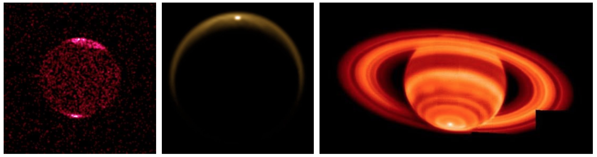

The now accepted theory of sun-Earth Birkeland currents, what astro-physicists call “magnetic ropes” or “flux ropes”,[1] provides a mechanism to explain polar “hot spots” on planets throughout the solar system.
CHANDRA x-ray data of Jupiter from 2000,[2] the Cassini image of Titan in infrared from 2009,[3] and Keck Observatory’s temperature data from Saturn in 2004,[4] all show increased energy in “hot spots” at the pole. Birkeland currents entering planets through the poles (that power planetary magnetic fields) is a mechanism that fits with the data.

The only other possible explanation is the theory of polar holes, with energy radiating from the planet core.